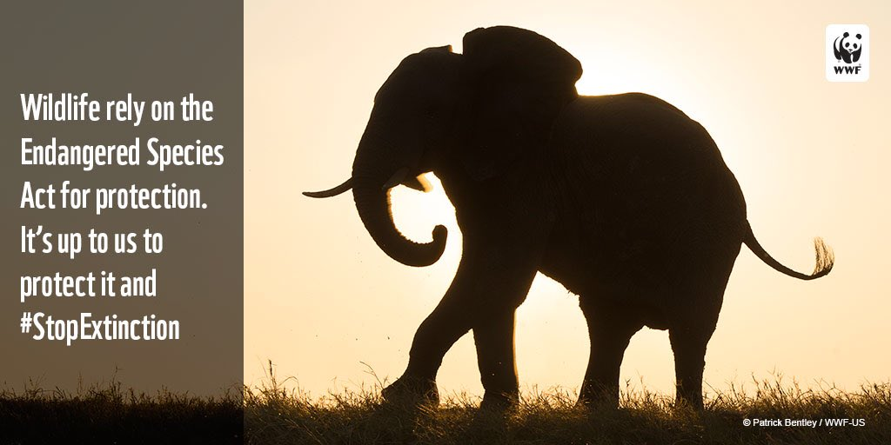
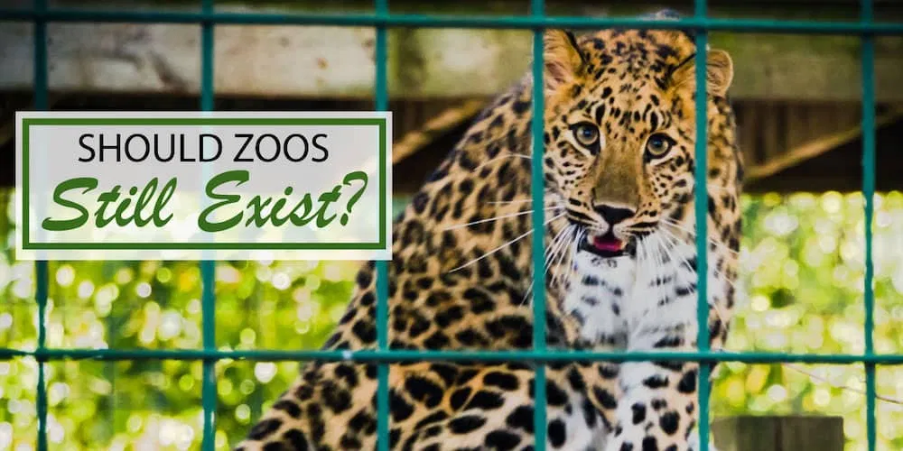

Wildlife traditionally refers to undomesticated animal species, but has come to include all organisms that grow or live wild in an area without being introduced by humans.[1] Wildlife can be found in all ecosystems. Deserts, forests, rainforests, plains, grasslands, and other areas, including the most developed urban areas, all have distinct forms of wildlife. While the term in popular culture usually refers to animals that are untouched by human factors, most scientists agree that much wildlife is affected by human activities.[2] Humans have historically tended to separate civilization from wildlife in a number of ways, including the legal, social, and moral senses. Some animals, however, have adapted to suburban environments. This includes such animals as domesticated cats, dogs, mice, and rats. Some religions declare certain animals to be sacred, and in modern times, concern for the natural environment has provoked activists to protest against the exploitation of wildlife for human benefit or entertainment. Global wildlife populations have decreased by 68% since 1970 as a result of human activity, particularly overconsumption, population growth and intensive farming, according to a 2020 World Wildlife Fund's Living Planet Report and its Living Planet Index measure, which is further evidence that humans have unleashed a sixth mass extinction event.[3][4] According to CITES, it has been estimated that annually the international wildlife trade amounts to billions of dollars and it affects hundreds of millions of animal and plant specimen.[5
For food A mesh bag full of live frogs waiting for a buyer at Chiang Mai's Thanin market. A mesh bag full of live frogs waiting for a buyer at Chiang Mai's Thanin market. Frog meat in Thailand is mostly used in stir-fries and Thai curries. Stone Age people and hunter-gatherers relied on wildlife, both plants and animals, for their food. In fact, some species may have been hunted to extinction by early human hunters. Today, hunting, fishing, and gathering wildlife is still a significant food source in some parts of the world. In other areas, hunting and non-commercial fishing are mainly seen as a sport or recreation. Meat sourced from wildlife that is not traditionally regarded as game is known as bushmeat. The increasing demand for wildlife as a source of traditional food in East Asia is decimating populations of sharks, primates, pangolins and other animals, which they believe have aphrodisiac properties. In November 2008, almost 900 plucked and "oven-ready" owls and other protected wildlife species were confiscated by the Department of Wildlife and National Parks in Malaysia, according to TRAFFIC. The animals were believed to be bound for China, to be sold in wild meat restaurants. Most are listed in CITES (the Convention on International Trade in Endangered Species of Wild Fauna and Flora) which prohibits or restricts such trade
Extinction
